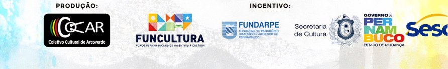

Regulamento
Carregando…
Baixar regulamento (.docx)Arcoverde · Pernambuco
O Festival Frevo Fertão é onde a alegria e a cultura do nosso povo se encontrarão num só compasso!,
Ver regulamentoCarregando conteúdo…
Carregando…
Carregando…
Baixar regulamento (.docx)Finalíssima em vídeo e álbum no Spotify.

No Frevo Sertão, a orquestra de metais não apenas toca — ela corta o ar como a lâmina da primeira chuva após a seca. O pé bate no chão de barro com a mesma urgência com que o passista gira no asfalto: velocidade, precisão, alegria contida que explode em cada volta.
Do outro lado, a resiliência do povo sertanejo: raiz que não pede licença para florescer na pedra. Unimos o giro frenético do frevo à cadência do coco, ao couro do gibão e à palha que filtra o sol — para que o Carnaval respire o mesmo oxigênio do setão.

Três frentes que sustentam a festa — convide o corpo antes do verso.
Passistas locais e convidados que ensinam o giro, o susto e o sorriso no meio do turbilhão — a escola viva do frevo no chão de Arcoverde.
O som dos metais rasgando o silêncio do Sertão — trompete, sax e bombo desenhando o mesmo horizonte que o sol pinta ao cair.
A tradição local como anfitriã: ponto de encontro entre o coco pernambucano e o convite ao ritmo visitante — raiz e ponte no mesmo batuque.
Sombrinhas de frevo em camadas de vidro fosco, textura de couro de gibão e palha do chapéu entrelaçadas em colagem contemporânea — cordel visual para um tempo que dança offline.


Mapa ilustrativo — pontos dourados indicam hubs do festival.